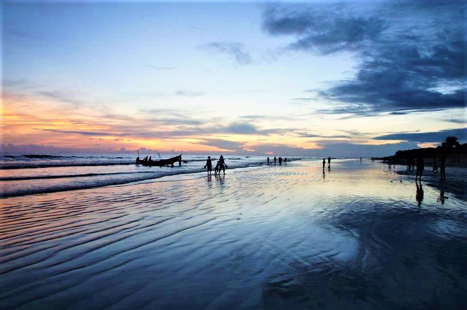
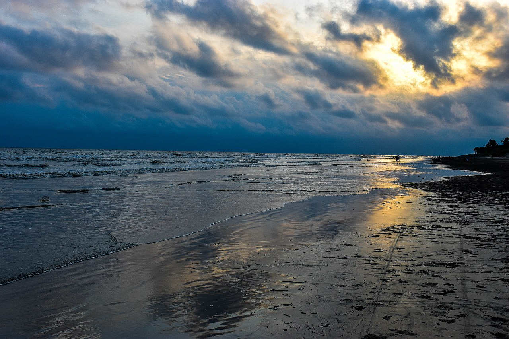

| |
Visit Bangladesh |
| Home | Cities | Sajek | Cox's Bazar | Sylhet | Masjids | Foods |
Kuakata(Bengali: কুয়াকাটা) (Burmese/Rakhine/Arakanese:ကုအာကာတ) is a town in southern Bangladesh known for its panoramic sea beach.Kuakata beach is a sandy expanse 18 kilometres (11 mi) long and 3 kilometres (1.9 mi) wide.From the beach one can have an unobstructed view of both sunrise and sunset over the Bay of Bengal.
The name Kuakata originated from the word 'kua' — the Bengali word for "well" which was dug on the seashore by the early Rakhine settlers(Burmese tribes) in quest of collecting drinking water. They landed on the Kuakata coast in the 18th century after being expelled from Arakan (Myanmar) by the Burmese extremists . Afterwards, it has become a tradition of digging wells in the neighbourhoods of Rakhaine tribes for water.
The name Kuakata originated from the word 'kua' — the Bengali word for "well" which was dug on the seashore by the early Rakhine settlers(Burmese tribes) in quest of collecting drinking water.They landed on the Kuakata coast in the 18th century after being expelled from Arakan (Myanmar) by the Burmese extremists . Afterwards, it has become a tradition of digging wells in the neighbourhoods of Rakhaine tribes for water.
